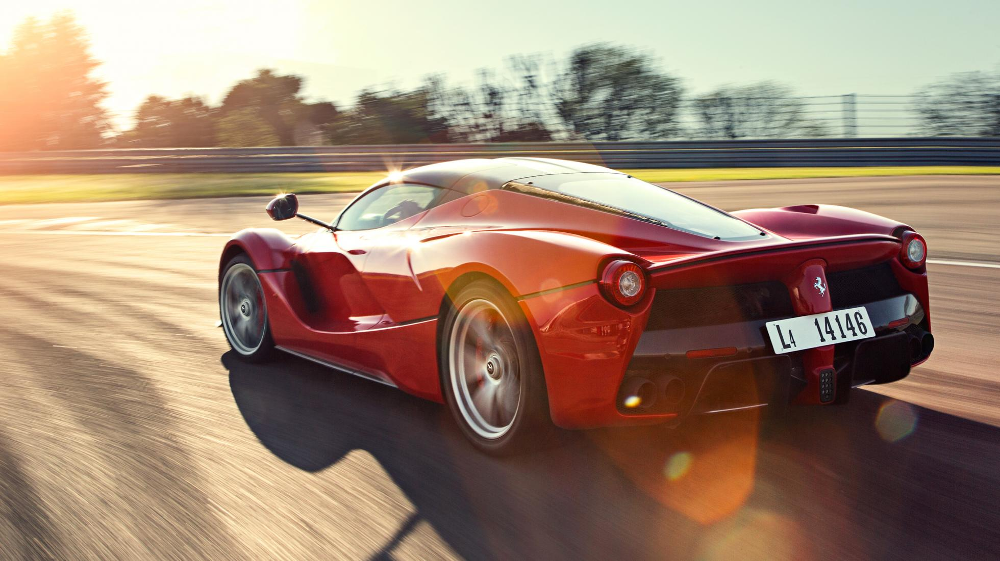
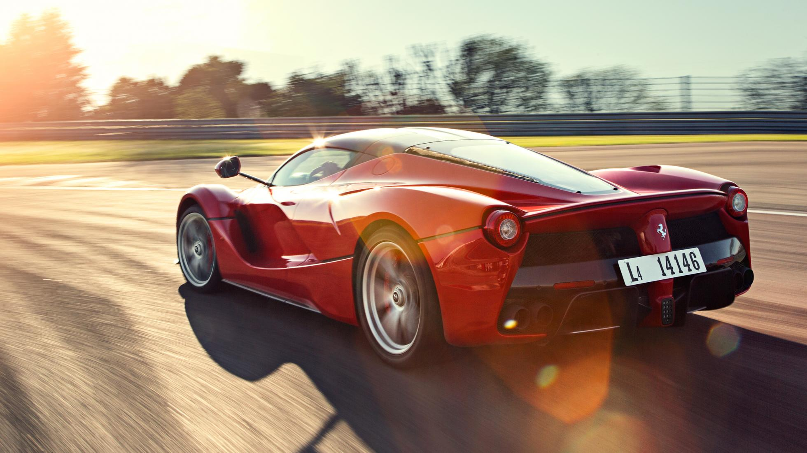
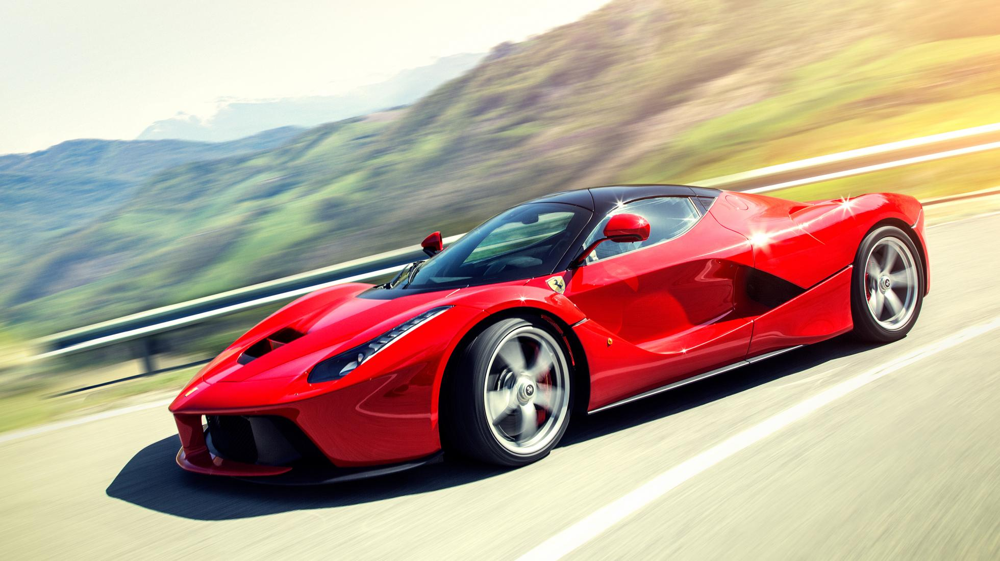
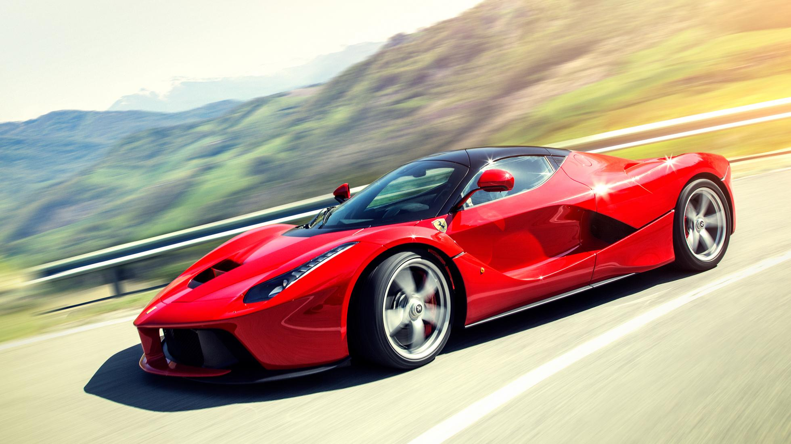
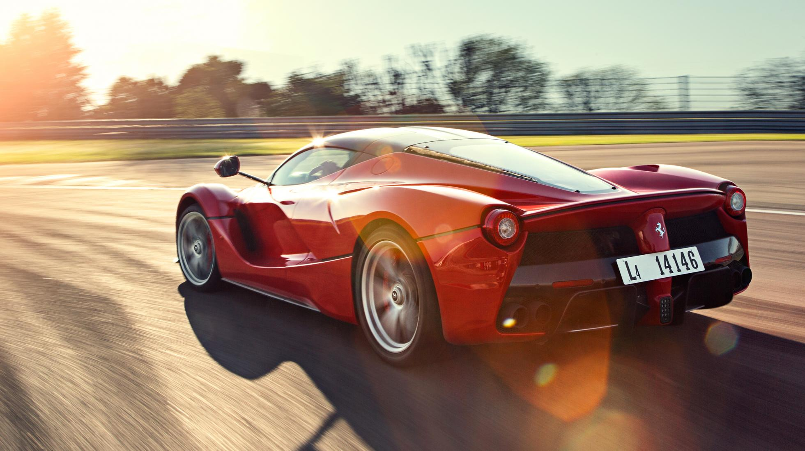
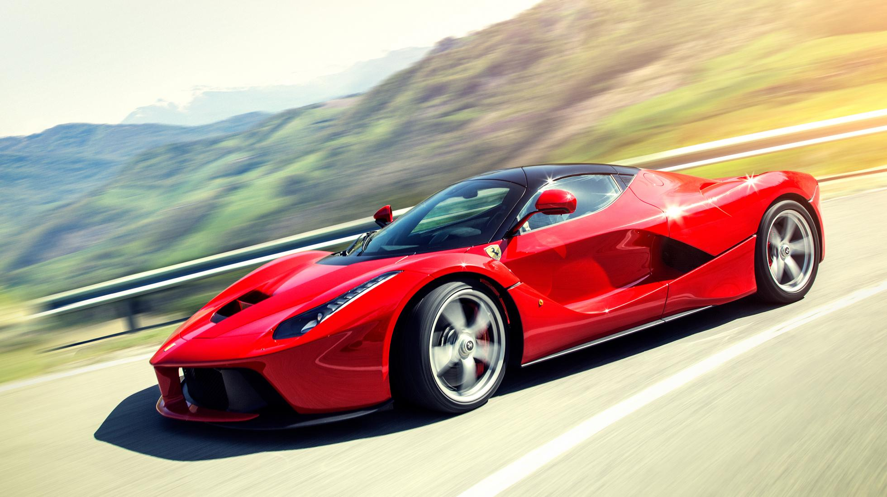

 

| MODELLO | Prezzo | l motore e disp. cilindri | CV | km/h | 0-100 | km/l | kg |
| Coupé DTC | 1.400.000 | 6262 V12 | 963 | 350 | 3,1 | 14,2 | 1255 |


LaFerrari è sempre sulla bocca di tutti, ad ogni uscita viene fotografata, filmata, osannata, ma adesso si parla di lei per una novità e non riguarda la variante da pista XX che riprende il concetto della FXX già avviato dalla Enzo, ma di una nuova probabile versione di serie. La notizia, riportata da "The Supercar Kids" si baserebbe su una dichiarazione di una fonte interna che, per ovvi motivi, non vuole essere citata. Dunque, entriamo nel dettaglio dell'indiscrezione: LaFerrari potrebbe, il condizionale d'obbligo, essere prodotta anche in una variante Spider. Il numero di esemplari però, sarebbe limitato a 10, e questo la renderebbe ancora più esclusiva della versione chiusa. Dunque, ecco che il suo prezzo potrebbe benissimo superare i 3 milioni di euro. Una cifra astronomica per beneficiare di un po' di vento tra i capelli, ma comunque alla portata dei collezionisti più incalliti. Dal punto di vista puramente estetico e funzionale, LaFerrari Spider potrebbe avere due pannelli removibili a livello del tetto, mentre le portiere potrebbero adottare una soluzione normale e quindi perdere l'attuale apertura scenografica. Ovviamente, siamo solamente a livello d'ipotesi, ma è chiaro che un ritorno dei rumors sull'argomento possa indurre a pensare che possa esserci la volontà di realizzare la vettura, visto che le Ferrari in serie limitata riscuotono l'approvazione incondizionata da parte dei collezionisti. Staremo a vedere se ci saranno novità imminenti o se LaFerrari Spider rimarrà solamente un sogno. Nel frattempo, possiamo solo immaginare il suo sound in accelerazione che entra nelle orecchie senza barriere di sorta.